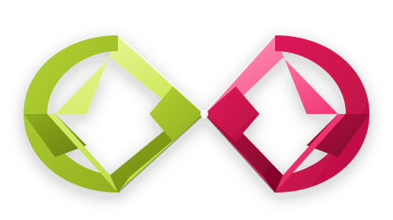

CAL CALInforme Gerencial de Arquitectura Organizacional, Modelo de Negocio e Innovación Metrológica con Inteligencia Artificial.
Estructura ágil de 4 Unidades de Negocio articuladas bajo la Dirección Técnica e Inteligencia Artificial.
Laboratorio de Termometría (-80 °C a 300 °C) y Calificación de Equipos Térmicos (DQ/IQ/OQ/PQ).
Venta de Termómetros Patrón, Dataloggers y Bloques Secos con "Pack Calidad Total".
Venta del Paquete "Llave en Mano" (PKG-TERM-17025) y transferencia tecnológica a laboratorios.
Captación B2B en LinkedIn/Instagram, Portal Web y Asistente IA Gemini.
Tres anillos de ingresos diseñados para garantizar rentabilidad y flujo de caja inmediato.
Suite de 5 Procedimientos Operativos Estándar (SOPs) auditorables desarrollados:
Plan de vuelo gerencial para los próximos 12 meses de operación de CAL CAL:
Activación de la web en vivo, cotizaciones con Excel y venta inicial de equipos con Pack Calidad Total.
Comercialización del paquete PKG-TERM-17025 a laboratorios industriales y farmacéuticos.
Auditoría interna de los 5 SOPs y solicitud de acreditación formal ante ONAC.
Ampliación del alcance a las magnitudes de humedad relativa y presión industrial.